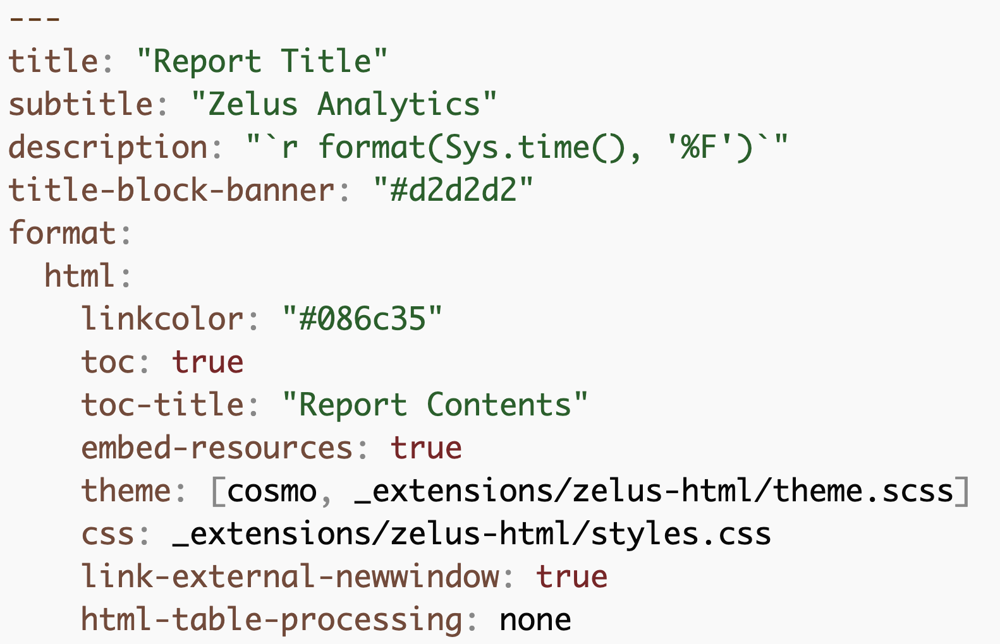
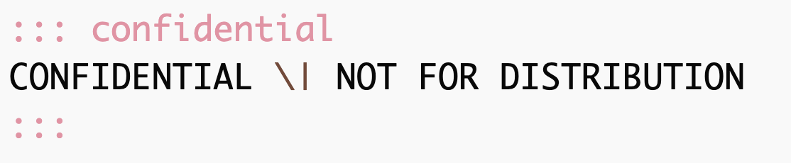
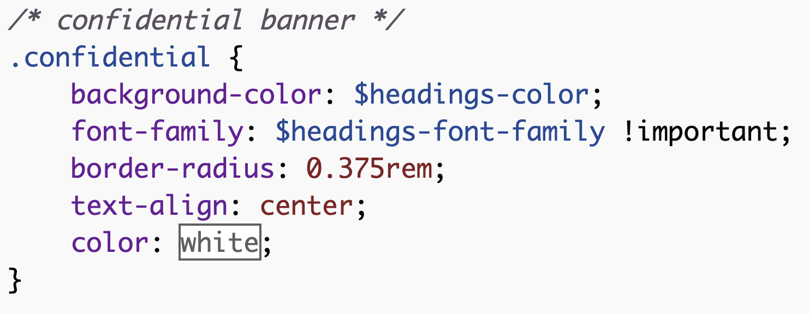
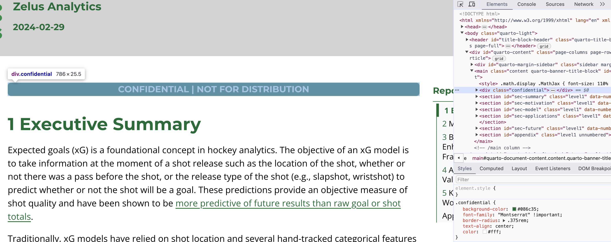
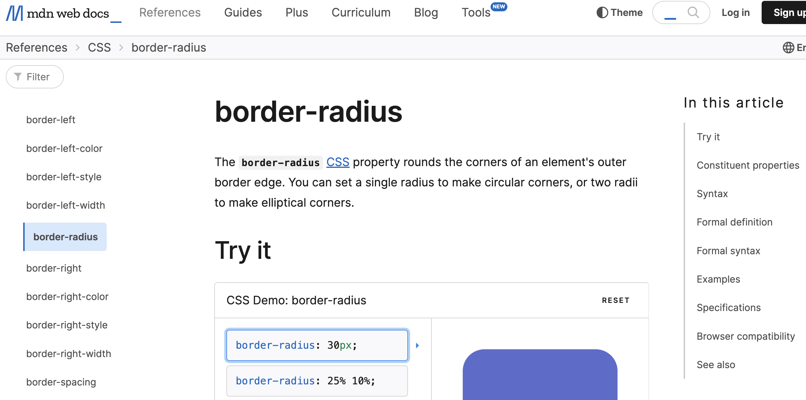
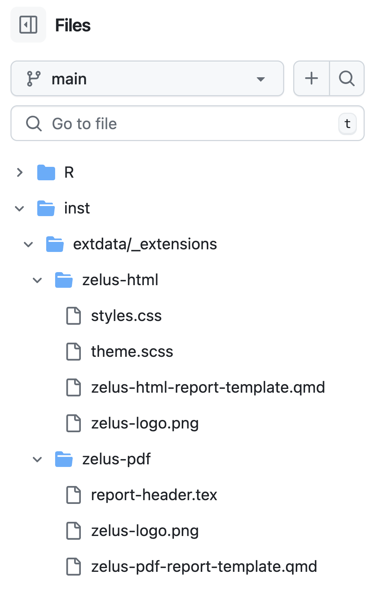

I was lucky enough to speak at posit::conf(2024) on designing and deploying internal Quarto templates. To steal straight from the Quarto docs, a Quarto template is “a straightforward way for users to get started with new Quarto projects by providing example content and options.” (This post by Cynthia Huang is also a good resource for explaining Quarto extensions vs templates vs formats.)
Most of the content in the Quarto docs focuses on creating templates for public use, shared in a GitHub repo, but this talk focused on internal templates to share within an organization. The talk covered why you should bother making a Quarto template, how you can go about designing one, and how you can deploy it via a function in an internal package.
Why bother?
Ensures all documents produced by the org have a similar style/structure and saves analysts from having to learn & implement html & css.
By taking the time to create a Quarto template that matches the desired style and branding of your organization, you can ensure that anything produced on your team has a streamlined look.
Provides an analytical skeleton to set people up for success.
Your Quarto template can provide the styling and scaffolding of how you want your report to look like, but it can also include whatever example content you want your users to have access to in order to guide how they approach analyses. For example, the Quarto template we use on my team loads in our internal packages and provides instructions on how to use our custom ggplot2 and gt themes as well as examples on how to query our data. Having it documented right where people use and need it saves more experienced team members from having to answer the same questions over and over again.
How do I make this?

Quarto documents are almost infinitely customizable, which is its own entire topic. A good starting point is to tinker with customized theme and css files, which you can specify in your yaml. I want to share one specific example with two useful tools for learning more about css.
Shown above is a confidential banner that’s at the beginning of all of our reports. Shown below is what it looks like in our template .qmd.

And shown below is what the confidential div looks like in the theme.scss file. This specifies a pretty simple text box with white centered text in a specific font against a specific background color. The border-radius element is what creates the rounded corners. But if you’re learning css, and you want rounded corners, how do you figure out that it’s border-radius?

One trick is to use the DevTools in Chrome. Right clicking on any website or rendered HTML document (including a Quarto document!) and selecting “Inspect” will bring up the DevTools, as shown in the screenshot below. The right-hand pane shows the skeleton of the document, and hovering over any element on the left will highlight it on the right. The lower-right pane shows all the styles applied to that element, and you can even make edits right there in the menu and see what the changes look like.

I also recommend the Mozilla Web Docs as a great resource for learning more about css and html. Here is the page for border-radius, which is shown below.

How do I share this?
Sure, it’s possible to bundle up these files and share them via email or on some sort of shared drive. But version control is ideal, and these templates can easily be deployed via a function in an internal package. (If you don’t use internal packages, read Emily Riederer’s post on their value!)
There are two parts to this: storing all the necessary files and creating a function that copies those files over to the user. The screenshot below shows the structure of my organization’s internal package. We have two templates, for html and for pdf, and the necessary files, including the css files and the template itself and any image files like logos, are stored within inst > extdata > _extensions.

The function itself, called create_zelus_html, lives in the R folder of the internal package and does four things:
- creates an
_extensionsfolder in the user’s directory - copies over the files from the appropriate folder in
inst - creates a new
.qmdfile using thefilenameargument in the function - opens that
.qmdfile in the editor
Here’s what the function looks like (much of this was taken from Spencer Schien, who borrowed heavily from Tom Mock!).
create_zelus_html <- function(file_name = NULL,
ext_name = "zelus-html") {
if (is.null(file_name)) {
stop("You must provide a valid file_name")
}
# check for available extensions
stopifnot("Extension not in package" = ext_name %in% c("zelus-html"))
# check for existing _extensions directory
if(!file.exists("_extensions")) dir.create("_extensions")
message("Created '_extensions' folder")
# create folder
if(!file.exists(paste0("_extensions/", ext_name))) dir.create(paste0("_extensions/", ext_name))
# copy from internals
file.copy(
from = system.file(paste0("extdata/_extensions/", ext_name), package = "hockeyutils"),
to = paste0("_extensions/"),
overwrite = TRUE,
recursive = TRUE,
copy.mode = TRUE
)
# logic check to make sure extension files were moved
n_files <- length(dir(paste0("_extensions/", ext_name)))
if(n_files >= 2){
message(paste(ext_name, "was installed to _extensions folder in current working directory."))
} else {
message("Extension appears not to have been created")
}
# create new qmd report based on skeleton
file.copy("_extensions/zelus-html/zelus-html-report-template.qmd",
paste0(file_name, ".qmd", collapse = ""))
# open the new file in the editor
file.edit(paste0(file_name, ".qmd", collapse = ""))
}The gif below shows the function from the viewpoint of the user: calling the function with an argument for the filename will bring up a new template in the editor, completely renderable right out of the box.